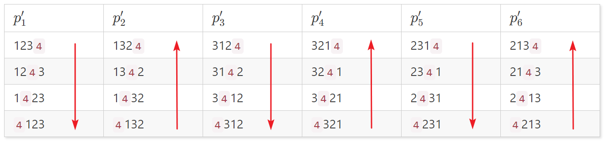

算法原理
相关算法——插入法
对于集合
$$ S=\{a_1, a_2, …, a_n\} $$
若已知前 $n-1$ 个元素的全排列，则 $n$ 个元素的全排列
$$ p_i=\{p_1,p_2,…,p_{(n-1)!}\} $$
可以这样生成：将 $a_n$ 插入 $p_i$ 不同位置中，由此，得到集合 $S$ 的全排列
为什么这样操作能得到集合 $S$ 的全排列？因为每个 $p_i$ 的可能插入位置为 $n$ 个，所以总数是 $n!$ 又因为每个 $p_i$ 是不同的，因此，得到的排列必然没有重复
插入法有一个缺点：为了产生 $n$ 个元素的排列，必须知道并存储所有 $n-1$ 个元素的排列，然后才能产生出所有 $n$ 阶排列
邻位对换法的改进
依赖插入法能够生成全排列的事实，但邻位对换法不需要知道 $n-1$ 个元素的排列，只需要从某一个初始排列状态开始，进行特定的相邻元素交换即可生成全排列
算法正确性
假设算法对 $n$ 个元素能生成全排列，只需要证明其对 $n+1$ 个元素，也能生成全排列，对于新进来的元素，将其认为值最大，插入最右方，每次从右移到左，或者改变方向后从左移到右，就可以认为对于一个排列从不同位置插入生成一个新的排列，而原本 $n$ 个元素是全排列的，因此对于 $n+1$ 个元素也是全排列的，因此邻位对换法能生成全排列
以 $S=\{1, 2, 3, 4\}$ 为例。若 $\{1, 2, 3\}$ 的全排列为：
| $p_1$ | $p_2$ | $p_3$ | $p_4$ | $p_5$ | $p_6$ |
|---|---|---|---|---|---|
| 123 | 132 | 312 | 321 | 231 | 213 |
那么，将 $4$ 按从尾到头的方式插入每一个排列，就得到：

观察——
第 1 列，从上往下走
第 2 列，从下往上走
第 3 列，从上往下走
．．．
一直走到最后一列，当前方向上的最后一格
规律：路径上的任一排列是前一个排列交换两个相邻元素而得
比如 1423 ，它是由 1243 通过 4 与 2 换位得到
即：一个排列，由上一排列通过交换该排列下标为 $k-1$ 和 $k$ 的元素得到，越界的情况由突变解决。
算法步骤
在上面的模式中，交换的下标 $k$ 的序列为（设元素下标从左到右）：
3 2 1 {递减到1突变为3}
1 2 3 {递增到3突变为1}
3 2 1 {递减到1突变为3}
1 2 3 {递增到3突变为1}
3 2 1 {递减到1突变为3}
1 2 3
可以看到：对元素个数为 $n$ 的集合 $S$，其交换下标 $k, k \in [1,n-1]$ 的序列有如下规律：
1）开始时 $k = n-1$，每次减 $1$
2）当减到 $1$ 或加到 $n-1$ 时，$k$ 值发生突变：若前一个 $k = 1$，则变为 $n-1$；若前一个 $k = n-1$，则变为 $1$
3）$k$ 值突变后，新的 $k$ 以突变前的 $k$ 值开始递进（若是 $1$ 就递增，若是 $n-1$ 就递减）
4）$k$ 值突变后的交换下标序列是突变前的序列关于突变位置的“镜像”
比如：前 7 个交换下标 3 2 1 {3} 1 2 3 （加粗的位置为突变位置）
显然，突变位置后的下标 1 2 3 是突变前的下标 3 2 1 的"镜像”
根据如上规律，可编写相应的算法实现
代码实现
Java
import java.util.ArrayList;
public class Permutation {
public static void main( String[] args ) {
String[] result = permutation( "12345" );
// System.out.println( result.length + "\r\n" );
for ( String s : result ) {
System.out.println( s );
}
}
public static String[] permutation( String str ) {
ArrayList<String> charList = new ArrayList<String>();
char[] arrChars = str.toCharArray();
long times = 1;
int k = arrChars.length - 2;
int inc = -1;
for ( int i = 1; i < arrChars.length + 1; i++ ) {
times *= i;
}
for ( int i = 1; i < times; i++ ) {
swap( arrChars, k, k + 1 );
charList.add( new String( arrChars ) );
k += inc;
if ( k == -1 ) {
inc = 1;
k = 0;
swap( arrChars, arrChars.length - 2, arrChars.length - 1 );
charList.add( new String( arrChars ) );
i++;
}
if ( k == arrChars.length - 1 ) {
inc = -1;
k = arrChars.length - 2;
swap( arrChars, 0, 1 );
charList.add( new String( arrChars ) );
i++;
}
}
return charList.toArray( new String[0] );
}
private static void swap( char[] arr, int k1, int k2 ) {
char tmp = arr[k1];
arr[k1] = arr[k2];
arr[k2] = tmp;
}
}
C++
#include <iostream>
#include <string>
#include <iterator>
#include <algorithm>
using namespace std;
#define _swap(a, b) { int t = a; a = b; b = t; }
void permutation(int n) {
long long times = 1;
int *list = new int[n], k = n - 2, maxK = n - 2, dir = -1 ;
for (long long i = 1; i < n; ++i)
times *= i, list[i - 1] = i;
list[n - 1] = n;
// copy(list, list + n, ostream_iterator<int>(cout, " ")), cout << endl;
for (long long i = 1; i <= times; ++i) {
for (int j = 0; j < n - 1; ++j) {
_swap(list[k], list[k + 1]);
// copy(list, list + n, ostream_iterator<int>(cout, " ")), cout << endl;
k += dir;
}
k = i & 1 ? maxK : 0;
_swap(list[k], list[k + 1]);
// copy(list, list + n, ostream_iterator<int>(cout, " ")), cout << endl;
k = maxK - k;
dir = -dir;
}
delete[]list;
}
int main() {
permutation(5);
}
说明
- 实现相同功能的递归实现较多，但时间与空间复杂度高
- 不使用递归的代码看上去较多一点，但效能收益可观
参考
本文采用 知识共享署名许可协议（CC-BY 4.0）进行许可，转载注明来源即可。如有错误劳烦评论或邮件指出。